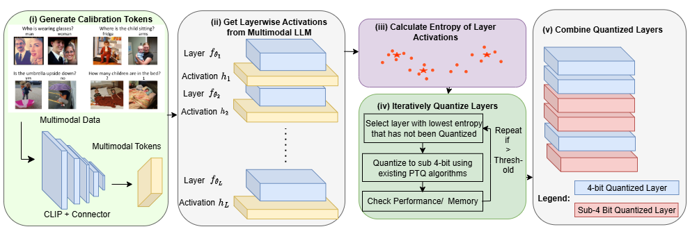
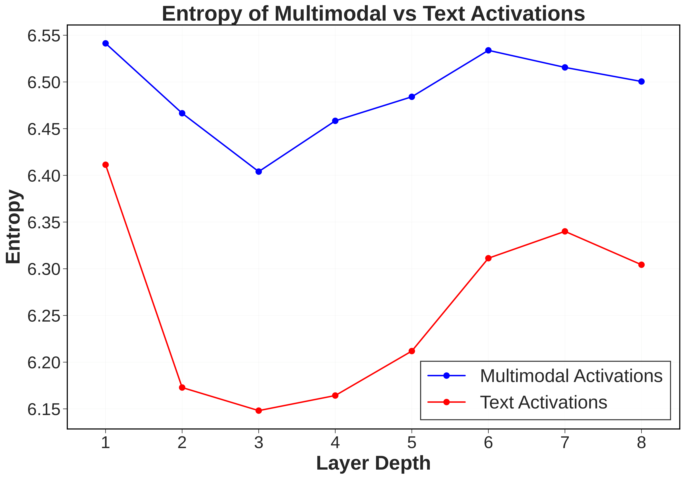
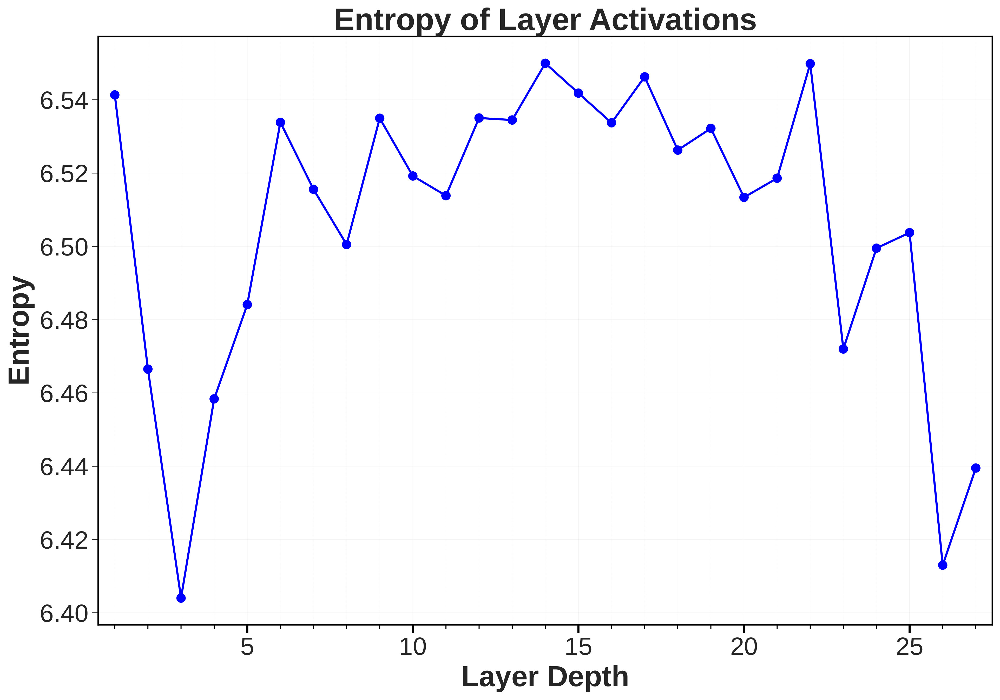
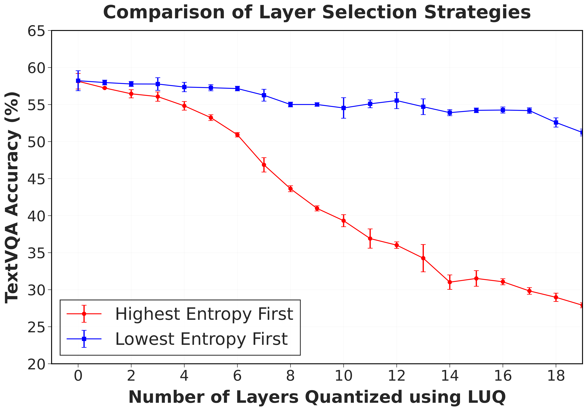
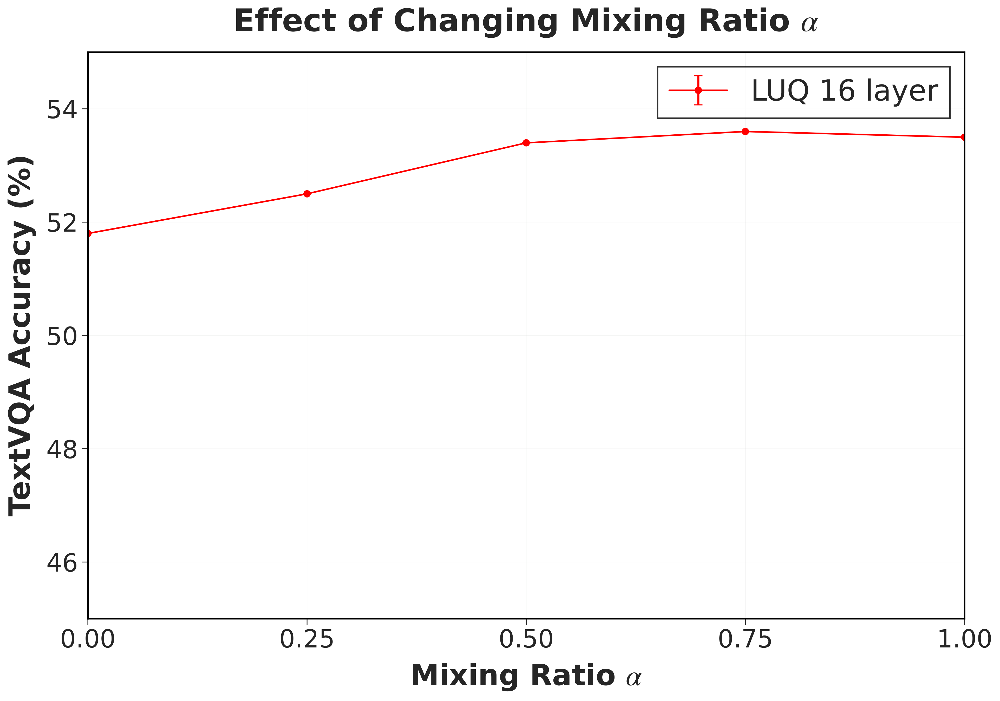
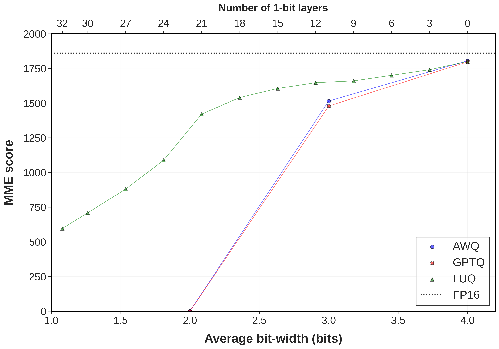
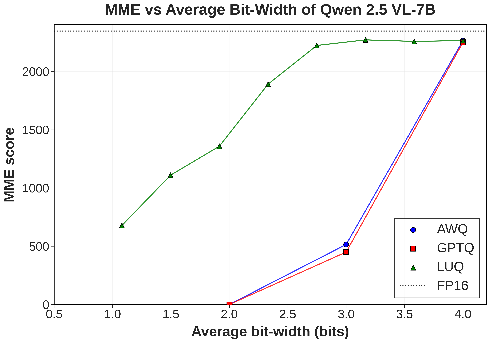

Sub-4-bit compression of multimodal LLMs by selectively quantizing only the layers robust to it — the low-entropy ones. 31–40% smaller than 4-bit, with minimal accuracy loss.
1 UIUC · 2 UC Los Angeles · 3 HP Inc. † Equal contribution · work done during an internship at HP Inc.
Large Language Models with multimodal capabilities have revolutionized vision-language tasks, but their deployment often requires huge memory and compute. While post-training quantization (PTQ) has compressed language models to as low as 1-bit precision without significant loss, its effectiveness for multimodal LLMs (MLLMs) remains relatively unexplored. We present the first study on ultra-low bit (<4-bit) quantization for multimodal LLMs. Our analysis reveals that multimodal tokens and the intermediate activations they produce exhibit significantly higher statistical variance and entropy than text tokens, making them less tolerant to ultra-low bit quantization. However, this activation entropy varies significantly across layers — and we empirically show that lower-entropy layers can better tolerate ultra-low bit quantization. Building on these insights, we propose LUQ: Layerwise Ultra-Low Bit Quantization, which selectively applies ultra-low bit quantization to the layers most resilient to it. We additionally show that using a mix of multimodal (image and text) tokens for PTQ boosts VQA performance in the ultra-low bit regime. Evaluated on LLaVA-1.5 and Qwen-2.5-VL across 9 popular VQA benchmarks, LUQ models use 40% and 31% less memory than their 4-bit counterparts while degrading less than 10% on the MME benchmark.
LUQ is a method for extreme (<4-bit) compression of multimodal LLMs. By selectively quantizing only the layers that are robust to it — those with low activation entropy — it cuts memory sharply while preserving vision-language performance.
LUQ rests on a single observation: not all layers are equally fragile under quantization. Three ideas turn that into a compression recipe.
Multimodal activations carry higher entropy than text — but that entropy varies sharply by layer. We measure per-layer activation entropy from multimodal calibration tokens to find the resilient layers.
Layers are quantized to ultra-low bit-width in ascending entropy order, iterating until a memory or performance budget is met. High-entropy layers are kept at higher precision.
Calibrating PTQ with a mix of image and text tokens (ratio α) rather than text alone measurably boosts VQA accuracy in the ultra-low bit regime.

The observations behind LUQ, measured on Qwen-2.5-VL-7B.




Across 9 VQA benchmarks, LUQ delivers a far better performance-vs-size trade-off than standard PTQ, which collapses below 3 bits.
| Method | Avg. Bits |
MME Per. |
MME Cog. |
MM Bench |
Text VQA |
VQAv2 | GQA | POPE | Chart QA |
Doc QA |
Math Vista |
|---|---|---|---|---|---|---|---|---|---|---|---|
| LLaVA-1.5 7B Backbone | |||||||||||
| FP16 (Baseline) | 16 | 1510 | 350 | 63.4 | 58.2 | 78.5 | 62.0 | 83.2 | – | – | 23.6 |
| GPTQ | 4 | 1450 | 347 | 58.2 | 56.8 | 76.3 | 61.4 | 76.0 | – | – | 20.1 |
| AWQ | 4 | 1456 | 349 | 59.8 | 56.7 | 76.6 | 61.5 | 76.7 | – | – | 20.6 |
| GPTQ | 3 | 1346 | 273 | 31.2 | 54.1 | 73.5 | 58.8 | 70.5 | – | – | 16.4 |
| GPTQ* | 2 | 0.0 | 0.0 | 0.0 | 0.0 | 0.0 | 0.0 | 0.0 | – | – | 0.0 |
| BiLLM | 1.08 | 561 | 39 | 7.4 | 15.6 | 37.2 | 22.7 | 25.5 | – | – | 3.5 |
| LUQ 16-layer (Ours) | 2.54 | 1365 | 257 | 46.7 | 53.4 | 74.9 | 58.2 | 74.5 | – | – | 18.7 |
| Qwen-2.5-VL 7B Backbone | |||||||||||
| FP16 (Baseline) | 16 | 1695 | 640 | 82.6 | 84.9 | 83.5 | 60.5 | 86.1 | 87.3 | 95.7 | 68.2 |
| GPTQ | 4 | 1638 | 610 | 80.2 | 84.2 | 82.6 | 60.1 | 84.8 | 84.1 | 93.4 | 44.8 |
| AWQ | 4 | 1645 | 620 | 80.9 | 84.6 | 82.7 | 60.5 | 85.6 | 84.5 | 93.5 | 46.1 |
| GPTQ | 3 | 319 | 131 | 34.7 | 79.5 | 81.5 | 53.4 | 82.9 | 61.0 | 89.2 | 21.0 |
| GPTQ* | 2 | 0.0 | 0.0 | 0.0 | 0.0 | 0.0 | 0.0 | 0.0 | 0.0 | 0.0 | 0.0 |
| BiLLM | 1.08 | 638 | 42 | 9.7 | 26.3 | 39.5 | 4.3 | 70.7 | 3.7 | 20.3 | 15.1 |
| LUQ 12-layer (Ours) | 2.75 | 1640 | 600 | 63.7 | 81.9 | 79.7 | 52.9 | 84.7 | 68.6 | 90.5 | 41.7 |
All scores higher-is-better. * indicates models that produced incoherent/gibberish output. ChartQA and DocQA are omitted for LLaVA-1.5, whose FP16 baseline is too low for a meaningful quantization comparison. LUQ values are means over 3 runs.
Progressively quantizing more layers (lowest entropy first) traces a trade-off frontier. LUQ stays close to FP16 well into the sub-3-bit regime, where GPTQ and AWQ collapse.


Because LUQ uses inter-layer (not intra-layer) mixed precision, each layer runs with a
single homogeneous kernel — so existing engines like llama.cpp can run it directly. On
Qwen-2.5-VL 7B, that translates into real speedups on commodity CPUs.
| Model configuration | Intel i7-13620H laptop, tok/s |
AMD Threadripper workstation, tok/s |
Memory |
|---|---|---|---|
| FP16 (Baseline) | 0.2 | 4.9 | 14.5 GB |
| Q4_K_M (Standard 4-bit) | 4.8 | 14.1 | 4.4 GB |
| LUQ (Mixed Precision) | 9.0 | 18.7 | 3.4 GB |
Generation throughput (tokens/sec) via llama.cpp, averaged over 10 runs.
Ultra-low-bit layers map to IQ1_M (~1.75 bpw) and high-precision layers to Q4_K_M (4-bit).
If you find our work useful, please consider citing:
@article{bhatnagar2026luq,
title = {LUQ: Layerwise Ultra-Low Bit Quantization for
Multimodal Large Language Models},
author = {Bhatnagar, Shubhang and Xu, Andy and Tan, Kar-Han
and Ahuja, Narendra},
journal = {Transactions on Machine Learning Research (TMLR)},
year = {2026},
url = {https://openreview.net/forum?id=3eK6U6ZiSp}
}